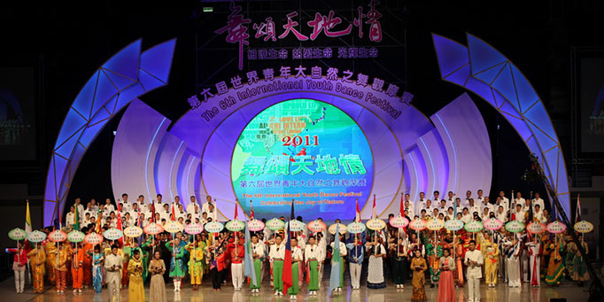
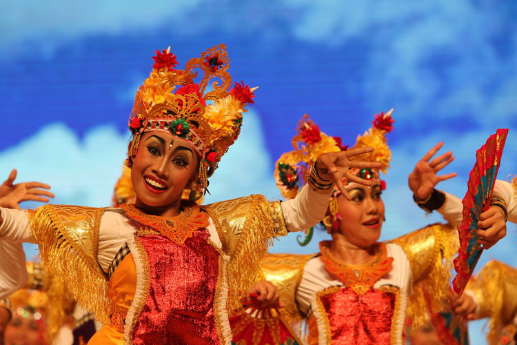
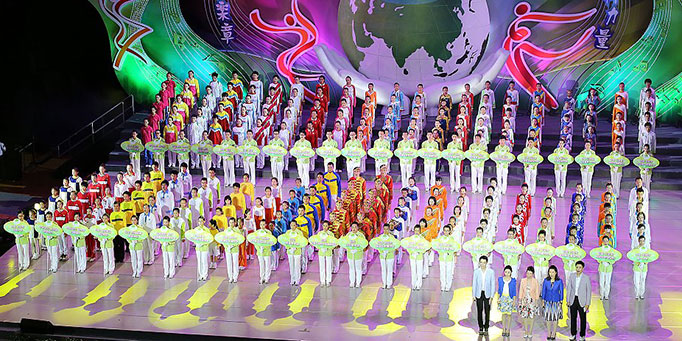
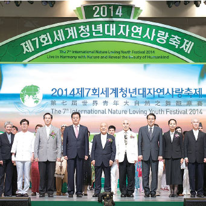
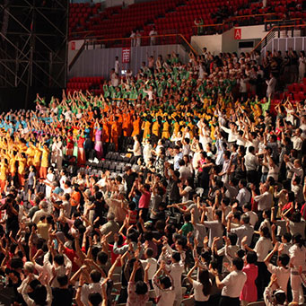
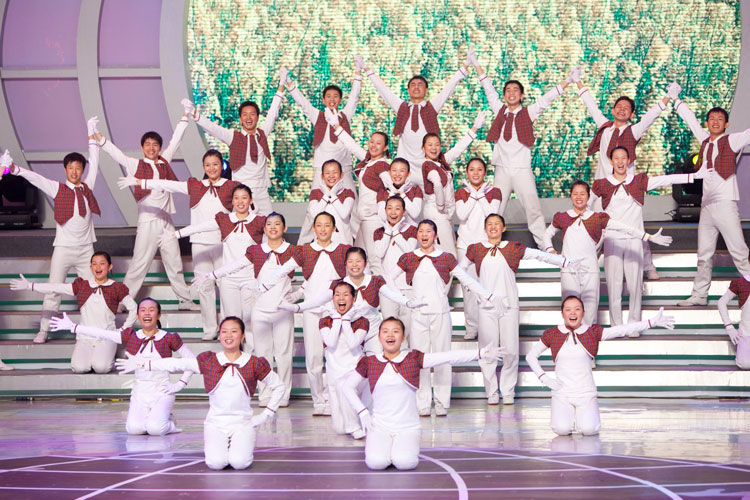
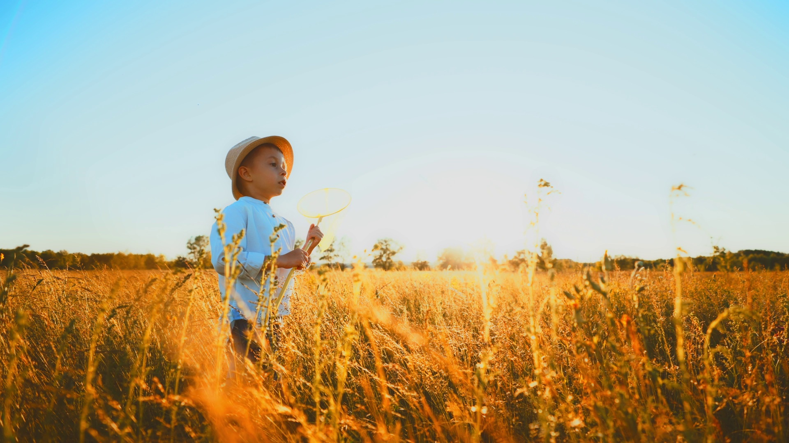
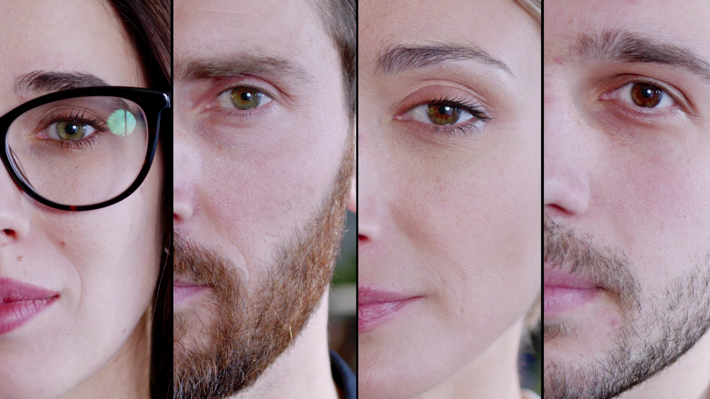
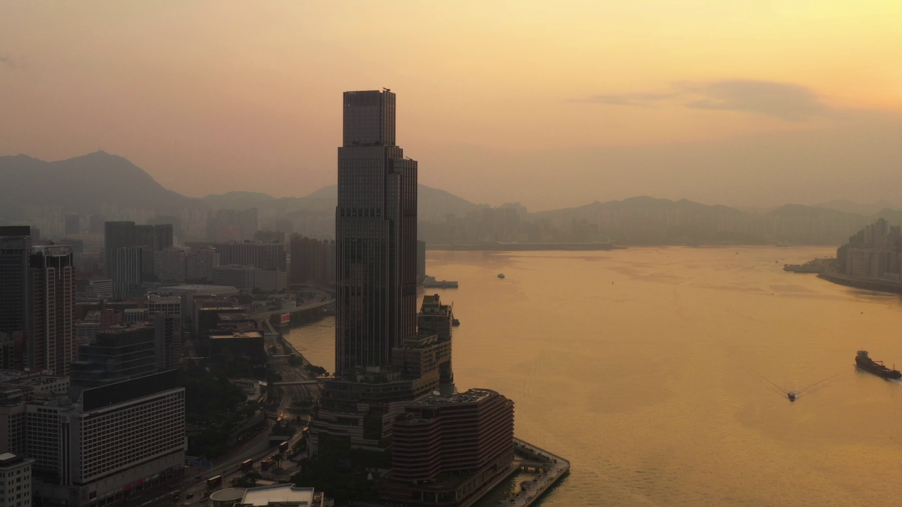

Galeri Kegiatan
Klik pada foto untuk melihat lebih detail. Gunakan tombol navigasi atau tombol keyboard ← → untuk berpindah antar foto.







Kegiatan Terkini
Berbagai program aktif yang dijalankan INLA SUMUT untuk masyarakat dan lingkungan di Sumatera Utara dan sekitarnya.

Program Pelestarian Alam
Kegiatan penanaman pohon, edukasi lingkungan, dan eksplorasi alam untuk menumbuhkan rasa cinta terhadap bumi dan ekosistemnya.
Festival Seni & Budaya
Pertunjukan tarian, musik, dan seni sebagai media penyampaian nilai moral dan etika kepada masyarakat luas, terutama generasi muda.

Pendidikan Moral Anak
Program pendidikan nilai dan karakter untuk anak-anak melalui permainan, cerita, dan kegiatan kreatif yang menyenangkan.

Pemberdayaan Komunitas
Membangun jaringan dan memperkuat komunitas lokal melalui diskusi, workshop, dan program sosial yang berdampak nyata.

Kesehatan Holistik
Program kesehatan jiwa dan raga yang mengintegrasikan nilai cinta alam dengan gaya hidup sehat dan seimbang untuk seluruh anggota.

Pertukaran Budaya Global
Program kolaborasi dengan cabang INLA di seluruh dunia — berbagi pengalaman, tradisi, dan semangat yang memperkuat persaudaraan global.
Jejak Langkah INLA SUMUT
Setiap tahun adalah babak baru dalam perjalanan panjang kami menyebarkan cinta dan keharmonisan di bumi Sumatera Utara.
INLA didirikan di Hong Kong oleh para pendiri yang memiliki visi menyebarkan nilai cinta alam dan kemanusiaan ke seluruh dunia.
Cabang pertama INLA di Indonesia resmi dibuka, membawa semangat dan program organisasi ke tanah air.
INLA SUMUT resmi terbentuk sebagai cabang di Sumatera Utara, mulai aktif menjalankan program-program lokal yang berdampak nyata.
INLA SUMUT meluncurkan program pelestarian alam yang melibatkan ratusan anggota dan komunitas lokal dalam aksi nyata menjaga lingkungan.
Festival seni budaya INLA SUMUT pertama yang menampilkan tarian, musik, dan pertunjukan budaya yang menarik ribuan penonton.
INLA SUMUT memperluas program ke lebih banyak wilayah di Sumatera Utara dan memperkuat kolaborasi dengan cabang global INLA.
INLA SUMUT terus bertumbuh dengan program-program baru, anggota baru, dan semangat yang tak pernah padam untuk dunia yang lebih harmonis.
Jadilah Bagian dari
Keluarga INLA SUMUT
Bersama kita bisa menciptakan perubahan yang lebih besar. Bergabunglah dengan komunitas kami dan ikut serta dalam perjalanan penuh makna ini.